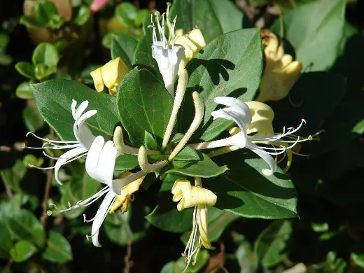

Japanese honeysuckle flowers
Japanese honeysuckle flowers is a edible flower or tea you can forage from May to July in Southeast, Northeast and Midwest. Invasive twining vine with paired oval leaves and fragrant white-turning-yellow tubular flowers.

When is Japanese honeysuckle flowers in season in the United States?
Japanese honeysuckle flowers is usually in season May to July. Timing shifts with weather, latitude and altitude.
Where does Japanese honeysuckle flowers grow in the United States?
Japanese honeysuckle flowers grows in Alabama, Arkansas, Connecticut, Delaware, District of Columbia, Florida, Georgia, Illinois, Indiana, Iowa, Kentucky, Louisiana, Maine, Maryland, Massachusetts, Michigan, Minnesota, Mississippi, Missouri, New Hampshire, New Jersey, New York, North Carolina, Ohio, Oklahoma, Pennsylvania, Rhode Island, South Carolina, Tennessee, Texas, Vermont, Virginia, West Virginia, Wisconsin. Regions: Southeast, Northeast, Midwest.
How do you recognise Japanese honeysuckle flowers?
Invasive twining vine with paired oval leaves and fragrant white-turning-yellow tubular flowers.
How do you harvest Japanese honeysuckle flowers?
Pick flowers on a dry, sunny morning once the dew has gone, when the scent is strongest. Take a few heads from each plant so it can still set fruit.
How do you eat Japanese honeysuckle flowers?
Sip the nectar, or steep flowers into syrup, cordial and sorbet.
How do you store Japanese honeysuckle flowers?
Make syrup.
What can you cook with Japanese honeysuckle flowers?
- Honeysuckle lemonade: Honeysuckle flower syrup stirred into fresh lemonade.